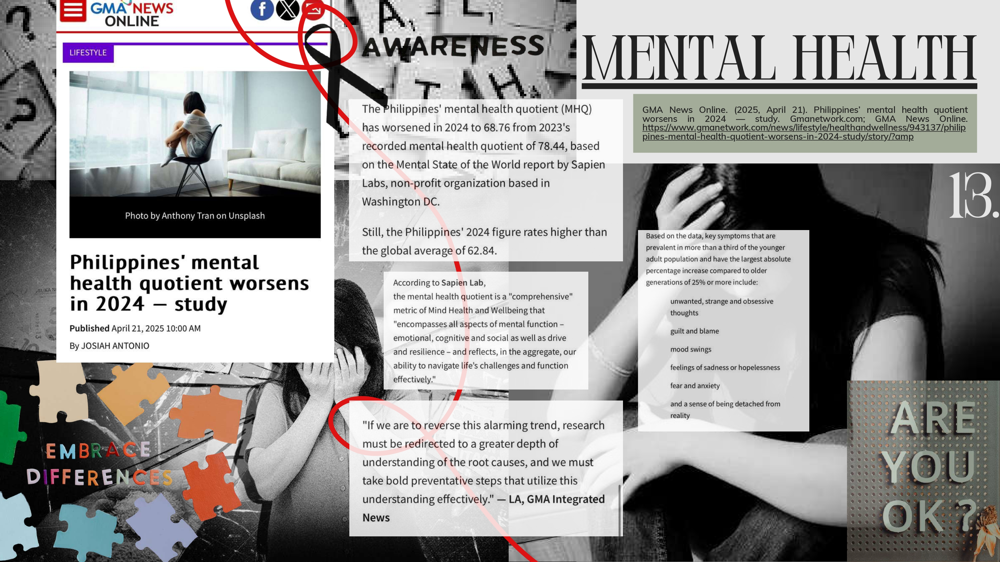
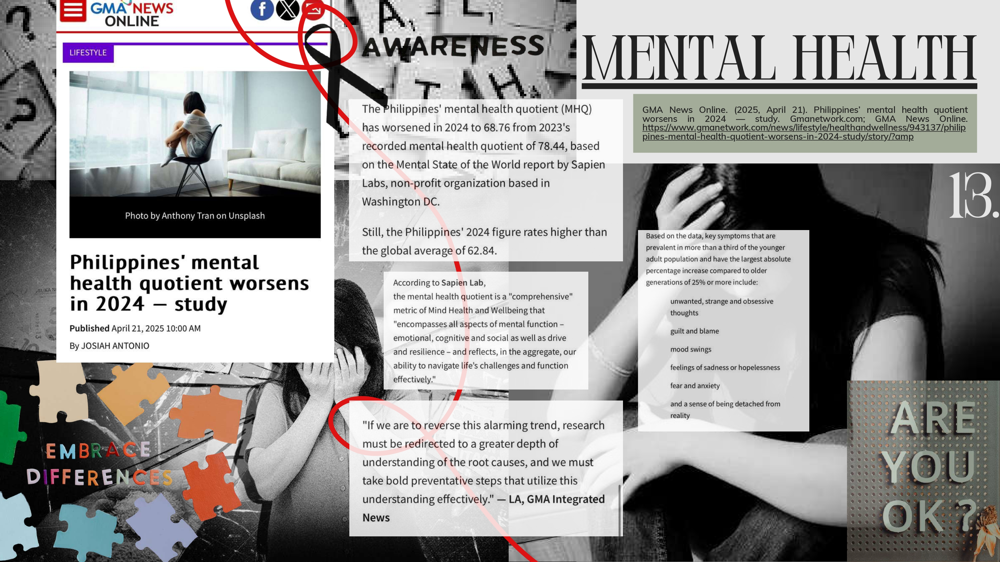

About Me
Mariel A. Diwa is a committed and passionate second-year AB Communication student at NU Clark who strives to become a professional in the media industry. Her blog offers well-researched and insightful content that delves into the nuances of development communication. Through her writings, she aims to inspire, educate, and contribute to a deeper understanding of this critical field.
Barangay Profile
Basic ICT Gap Survey
Digital Scrapbook
 
